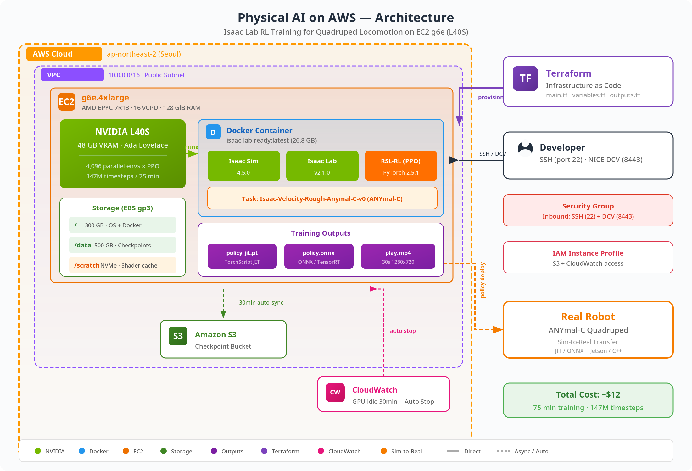

Workshop at a glance
Seven labs take you from an empty AWS account to an exported Sim-to-Real policy.
LabWhat you doTime
1Physical AI core concepts10 min
2Provision AWS GPU infrastructure with Terraform20 min
3Build the Isaac Sim / Isaac Lab Docker image30 min
4Train quadruped locomotion with PPO (Proximal Policy Optimization)75 min
5Analyze and visualize training results15 min
6Play mode — visualize and export the policy10 min
7Clean up and next steps10 min
~$12
total cost, about 3 hours end to end
You need
AWS account with g6e quota approved
Terraform ≥ 1.5 and AWS CLI
NVIDIA NGC account + API key
SSH key pair
Field-tested
Includes 12 real deployment pitfalls and fixes not found in official docs.
Pipeline and results
One terraform apply provisions everything; one terraform destroy cleans it all up.

+16.29
mean reward in 1,500 iterations
4,096
parallel environments on one L40S
Sim-to-Real export
Trained policies export as TorchScript JIT (.pt) and ONNX (.onnx) for deployment on physical robots via TensorRT / Jetson.
Cost controls built in
CloudWatch stops idle GPUs after 30 minutes; S3 checkpoint sync survives Spot interruptions.
Demo: trained ANYmal-C walking
youtu.be/k98MgurW9y0 →
Demo
Watch on YouTube→Trained ANYmal-C policy · Play mode, 16 environments · Isaac Lab
Thank you
Youngjin Kim
Sr. Solutions Architect · AWS Korea
© 2026, Amazon Web Services, Inc. or its affiliates. All rights reserved.